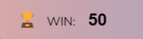

🲠The ultimate dice game ğŸ²

The rules:
- Press on "ROLL DICE" to get a random number between 1-6.
- The visible number will be added to your temporary score.
-
Press on"HOLD" to keep the points. The points will be added to your
current score. If you keep the points the acitve player will be
switched.
-
!!! Attention !!!
If a player rolls a "1" than he lose his
tempory points and the active player will be switched.
- Winner is the one who reaches the point limit first (see picture below)
- If you want to change the win-limit than click in the following field.

The change will be valid after you press on "NEW GAME".
- Good luck 🥳
About me:
- My name is Mike.
- I am just a regular stable guy from AUSTRIA 💪
- This is my second game that i programmed.
- Don't forget the free donate of min. 500€ 😉
- Have fun with the free-game (min. 500€ 🙄) .
- PS: The game is not made responsive.
(Only desktop version available)